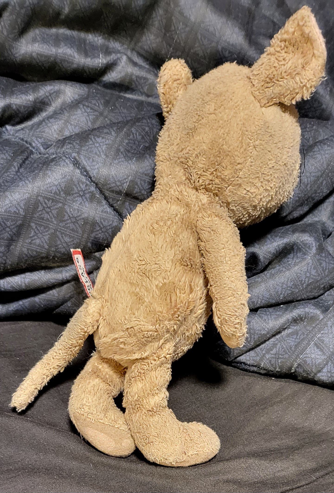
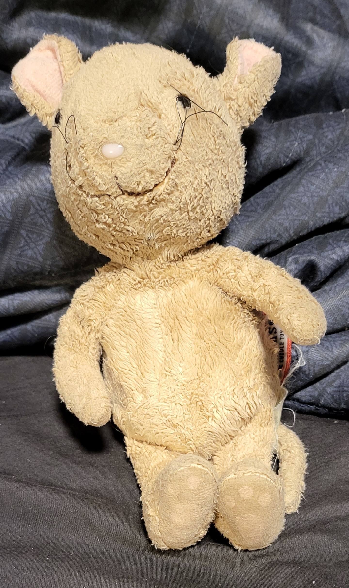
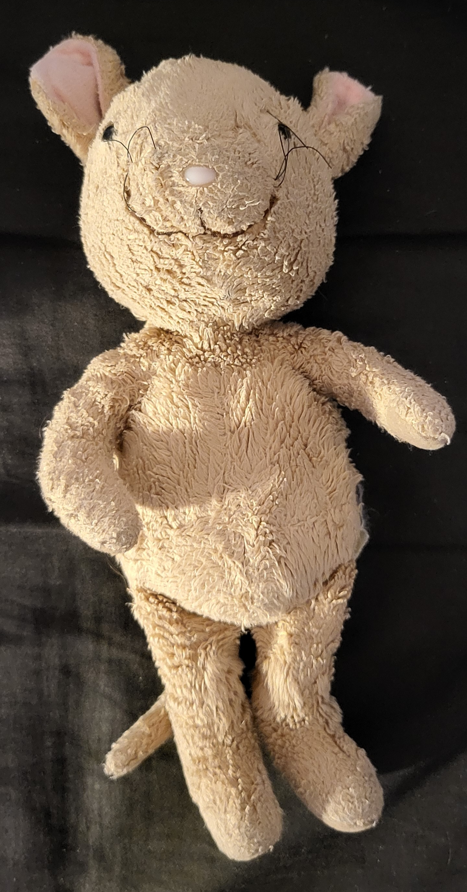
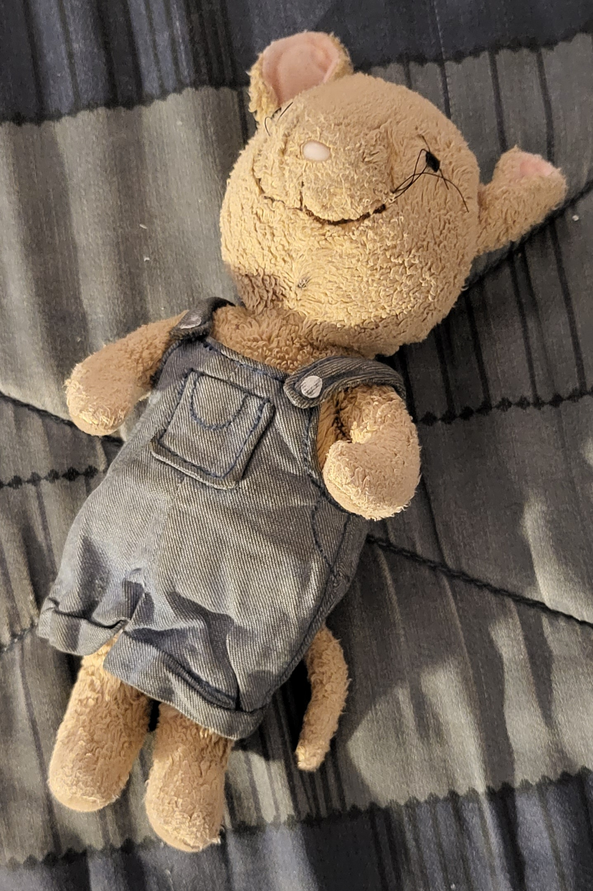
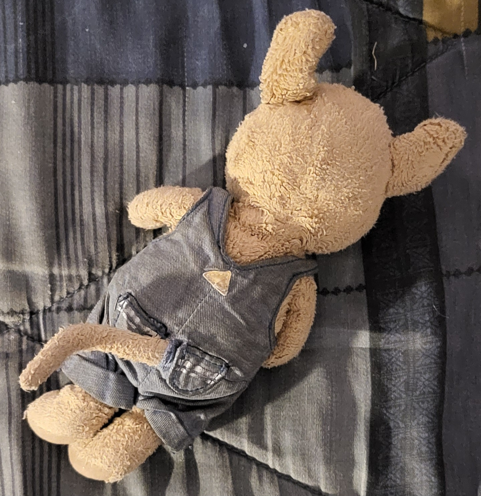

Eli is the mascot of Kodair, a web service provider.
Eli is a Komanoid mouse. A Komanoid [koʊˈhhjməˌnd] (from English man and -oid "resembling") is any creature or being with human-like form or characteristics that is part living and part technology/artificial. Eli is part human, part mouse, and part technology.
Eli has no gender specific traits. Their gender identity is unknown, so they go by "they".
Eli is part technology, meaning the they have technology integrated into their internals. One form of technology they have integrated in them is a computer mouse. Their chest is flat except for a slight indentation that separates their chest into two halves. This makes their chest look similar to that of the chest of the ABC Mouse mascot. When pressing the left half of their chest, it simulates a left mouse click on a computer mouse. Likewise, pressing down on the right half of their chest simulates a right click. When laying down chest side up, they can be dragged along a mouse pad, and, when dragged, the fur on their back detects this and their nerve signals can be used to simulate moving a computer mouse around a desk. They have an internal wifi and bluetooth chip integrated in their body, meaning that they can act as a wireless computer mouse. Their eyes have a built in flashlight, built in night vision, built in cameras, built in inferred, as well as many other technologies. Their nose also has built in sensors. They not only have vocal chords, but also a built in internal speaker. Their tail acts as an antenna. As you can see, I can go on and on about the technology built into them, but that would take too long. Instead, think of it this way. On the outside, the only visible feature that can be identified is the slight indent in the top middle of their chest, otherwise they look nothing like technology. Just an anthropomorphic mouse. However, on the inside, think of any technology, and they most likely have it inside them. Finally, while they are part technology, they can survive and live a normal life even if the technology inside them isn't charged or is damaged. However, this is unlikely to happen, as they can be charged through many ways including solar, wireless, and motion. And their body has the ability to regenerate and fix broken technology inside them the same way a body heals biologically. On top of all of this, as long as either their heart is pumping or their technology is working, they are alive.
Eli is 0'8" (0 feet and 8 inches) tall (or around 20 cm tall).

Eli has a bit of a C body type, but is more close to a mix of the body styles of Jerry from Tom and Jerry, the ABC Mouse mascot, and mostly that of my "If You Give A Mouse A Cookie" plush. Also, just like all my characters, they has a featureless crotch.
Eli's feet paws are loafers with three toes and paw pads or each toe and the sole.
Eli's hand paws are humanesque with no paw pads.
Eli's has a similar color scheme to that of Jerry mouse from Tom and Jerry, except much lighter to match the colors of my "If You Give A Mouse A Cookie" plush.
Eli usually wears their overalls (the exact ones that my "If You Give A Mouse A Cookie" plush) as it is canonical that they got them from my "If You Give A Mouse A Cookie" plush when they met me. Otherwise they are also comfortable wearing no clothing.
Eli enjoys helping other, being a good friend, cuddling, and actually finds being tiny very fun.
Ironically they prefer avoiding technology if possible. While they love technology, they also have the mindset that too much of a good thing (technology in this case) is no good (makes the good thing less special).
Eli is a lovable know-it-all. They tend to be a bit socially awkward, but once you get them talking, they don't stop. They are very humble, kind, and usually happy.
Eli is based on my "If You Give A Mouse A Cookie" plush with a bit of Jerry from Tom and Jerry, the ABC Mouse mascot, and technology mixed in.
    Some positions I would like include a reference sheet of Eli (standing straight with army by their side), a drawing of them sitting (to be used to put them sitting on an object or on another character's shoulder), pointing, speaking, a side-lying position, and one showing their feet paws.